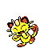

052 MEOWTH

TYPE:
NORMAL
Base Stats
Health Attack Defense Speed At. Esp. Def. Esp. Base Exp.
40 45 35 90 40 40 69
Max Stats
Health Attack Defense Speed At. Esp. Def. Esp
Level 50: 100 - 146 50 - 96 40 - 86 95 - 141 45 - 91 45 - 91
Level 100: 190 - 283 95 - 188 75 - 168 185 - 278 85 - 178 85 - 178
Level 100: 190 - 283 95 - 188 75 - 168 185 - 278 85 - 178 85 - 178
Movs by level
LEVEL - NAME - TYPE - POTENCY - ACCURACY - PP
1 NORMAL GROWL 100 40
Effect: Reduces enemy's ATTACK.
1 NORMAL SCRATCH 40 100 35
Effect: Spider with its sharp claws.
11 SINIEST BITE. 60 100 25
Effect: Attack that can cause withdrawal.
20 NORMAL PAYDAY 40 100 20
Effect: Throw coins that you'll get them back.
28 SINIEST FEINT. 60 100 20
Effect: Attack that never fails.
35 NORMAL SQUEAK 85 40
Effect: It greatly reduces the opponent's DEFENSE.
41 BLOWS NORMAL FURY 18 80 15
Effect: Quickly scratch 2 to 5 times.
46 NORMAL KNIFE 70 100 20
Effect: Good critical hit chance.
Effect: Reduces enemy's ATTACK.
1 NORMAL SCRATCH 40 100 35
Effect: Spider with its sharp claws.
11 SINIEST BITE. 60 100 25
Effect: Attack that can cause withdrawal.
20 NORMAL PAYDAY 40 100 20
Effect: Throw coins that you'll get them back.
28 SINIEST FEINT. 60 100 20
Effect: Attack that never fails.
35 NORMAL SQUEAK 85 40
Effect: It greatly reduces the opponent's DEFENSE.
41 BLOWS NORMAL FURY 18 80 15
Effect: Quickly scratch 2 to 5 times.
46 NORMAL KNIFE 70 100 20
Effect: Good critical hit chance.
Movements by MT/MO
MT/MO - NAME - TYPE - POTENCY - ACCURACY - PP
MT02 HEAD BLOW NORMAL 70 100 15
Effect: It drives the enemy back.
MT03 DAMN??? 100 10
Effect: It doesn't work the same with ghosts.
MT06 TOXIC POISON 85 10
Effect: Poison that increases the damage.
MT07 ELECTRIC CANNON 100 50 5
Effect: Attack that always paralyzes.
MT09 MORE PSYCHE NORMAL 100 10
Effect: Copy car changes. of the rival.
MT10 HIDDEN POWER NORMAL - 100 15
Effect: The power varies depending on the POKÉMON.
MT11 SUNNY DAY FIRE 90 5
Effect: Improved fire attacks 5 turns.
MT13 SNORING NORMAL 40 100 15
Effect: It is only used when you sleep.
MT16 WIND ICE ICE 55 95 15
Effect: Icy attack that lowers SPEED.
MT17 PROTECTION NORMAL 100 10
Effect: Thwart the attack. It can fail.
MT20 Stamina NORMAL 100 10
Effect: Always leave 1 PS, at least.
MT21 FRUSTRATION NORMAL - 100 20
Effect: Based on the lack of loyalty.
MT23 FRONT GLUE STEEL 100 75 15
Effect: Attack that can lower DEFENSE.
MT25 THUNDER ELECTRIC 120 70 10
Effect: Attack that can paralyze.
MT27 REVERSE NORMAL - 100 20
Effect: Attack based on loyalty.
MT30 SHADOW BALL GHOST 80 100 15
Effect: Attack that can lower DEF. ESP.
MT31 SLAP-MUD GROUND 20 100 10
Effect: Reduces enemy accuracy.
MT32 DOUBLE TEAM NORMAL 100 15
Effect: Improves evasion skill.
MT46 THIEF SINIEST. 40 100 10
Effect: Attack that can steal an object.
MT50 NIGHTMARE GHOST 100 15
Effect: The sleeper loses 1/4 HP per turn.
Effect: It drives the enemy back.
MT03 DAMN??? 100 10
Effect: It doesn't work the same with ghosts.
MT06 TOXIC POISON 85 10
Effect: Poison that increases the damage.
MT07 ELECTRIC CANNON 100 50 5
Effect: Attack that always paralyzes.
MT09 MORE PSYCHE NORMAL 100 10
Effect: Copy car changes. of the rival.
MT10 HIDDEN POWER NORMAL - 100 15
Effect: The power varies depending on the POKÉMON.
MT11 SUNNY DAY FIRE 90 5
Effect: Improved fire attacks 5 turns.
MT13 SNORING NORMAL 40 100 15
Effect: It is only used when you sleep.
MT16 WIND ICE ICE 55 95 15
Effect: Icy attack that lowers SPEED.
MT17 PROTECTION NORMAL 100 10
Effect: Thwart the attack. It can fail.
MT20 Stamina NORMAL 100 10
Effect: Always leave 1 PS, at least.
MT21 FRUSTRATION NORMAL - 100 20
Effect: Based on the lack of loyalty.
MT23 FRONT GLUE STEEL 100 75 15
Effect: Attack that can lower DEFENSE.
MT25 THUNDER ELECTRIC 120 70 10
Effect: Attack that can paralyze.
MT27 REVERSE NORMAL - 100 20
Effect: Attack based on loyalty.
MT30 SHADOW BALL GHOST 80 100 15
Effect: Attack that can lower DEF. ESP.
MT31 SLAP-MUD GROUND 20 100 10
Effect: Reduces enemy accuracy.
MT32 DOUBLE TEAM NORMAL 100 15
Effect: Improves evasion skill.
MT46 THIEF SINIEST. 40 100 10
Effect: Attack that can steal an object.
MT50 NIGHTMARE GHOST 100 15
Effect: The sleeper loses 1/4 HP per turn.
Pokédex Gold/Silver/Crystal By Professor Dog.